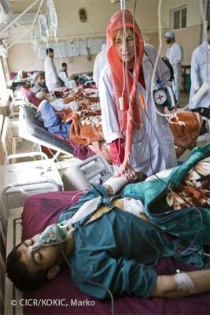

UN COMBATTANT QUI NE PARTICIPE PLUS AUX HOSTILITES

Certains combattants ne constituent plus une menace pour l’ennemi. Les attaquer n’apporterait aucun avantage pour la poursuite des hostilités. Ils deviennent alors des personnes protégées et ne peuvent faire l’objet d’attaques (sauf si ils commettent un acte hostile).
Ne constituent plus une menace :
1) Les combattants blessés, malades ou naufragés
Toutes les personnes qui se trouvent blessées, malades ou en naufrage, doivent être respectées et protégées, traitées avec humanité et recevoir les soins qu’exige leur état :
- dans les plus brefs délais ;
- dans la mesure du possible ;
- sans aucune discrimination défavorable (seule l’urgence médicale peut conduire à une priorité dans l’ordre des soins).
Les belligérants doivent prendre toutes les mesures possibles pour rechercher les blessés, les malades et les naufragés, les protéger contre le pillage et les mauvais traitements et les évacuer. Ils doivent également enregistrer les éléments propres à identifier les blessés, les malades et les naufragés.
2) Le combattant décédé
Les textes du DIH imposent aux Parties de prendre toutes les mesures possibles pour rechercher les morts et empêcher qu'ils ne soient dépouillés ou mutilés. Aucune distinction de caractère défavorable entre les personnes décédées ne peut avoir lieu.
Les Parties aux conflits doivent également :
- enregistrer tous les éléments propres à identifier les morts ;
- s’efforcer de faciliter le retour des restes des personnes décédées ;
- veiller à ce que l'inhumation, l'immersion ou l'incinération des morts soit précédée d'un examen attentif et si possible médical des corps, en vue de constater la mort, d'établir l'identité et de pouvoir en rendre compte ;
- veiller à ce que les morts soient enterrés honorablement, si possible selon les rites de la religion à laquelle ils appartenaient ;
- veiller que les tombes soient respectées, rassemblées si possible selon la nationalité des décédés, convenablement entretenues et marquées de façon à pouvoir toujours être retrouvées.
3) Le combattant qui a déposé les armes
Un combattant qui décide de se rendre tombe aux mains de l’ennemi et sera capturé en tant que prisonnier de guerre (voir « et qui est privé de liberté). Mais il est possible qu’un combattant ne veuille plus combattre et déserte son armée. Il devient alors déserteur. Qu’il le veuille ou non, le déserteur est avant tout un membre de l’armée ennemie ; et ce, peu importe les raisons qui le poussent à déserter. Il sera donc généralement considéré comme un combattant qui s’est rendu s’il tombe aux mains de l’ennemi. Cependant, il pourra expliquer la situation et prétendre au statut de civil.
| Sources |
- Première Convention de Genève, 1949 : articles 12 à 18
- Deuxième Convention de Genève, 1949 : articles 12 à 21
- Premier Protocole additionnel aux Conventions de Genève de 1949, 1977 : articles 9 à 10, 13 et 34
- Droit international humanitaire coutumier : règles 88 à 116